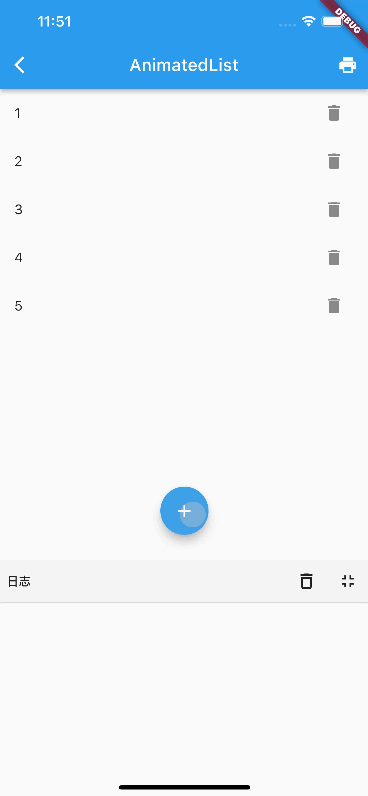

6.5 AnimatedList
AnimatedList 和 ListView 的功能大体相似，不同的是， AnimatedList 可以在列表中插入或删除节点时执行一个动画，在需要添加或删除列表项的场景中会提高用户体验。
AnimatedList 是一个 StatefulWidget，它对应的 State 类型为 AnimatedListState，添加和删除元素的方法位于 AnimatedListState 中：
void insertItem(int index, { Duration duration = _kDuration });
void removeItem(int index, AnimatedListRemovedItemBuilder builder, { Duration duration = _kDuration }) ;
下面我们看一个示例：实现下面这样的一个列表，点击底部 + 按钮时向列表追加一个列表项；点击每个列表项后面的删除按钮时，删除该列表项，添加和删除时分别执行指定的动画，运行效果如图6-13所示：

初始的时候有5个列表项，先点击了 + 号按钮，会添加一个 6，添加过程执行渐显动画。然后点击了 4 后面的删除按钮，删除的时候执行了一个渐隐+收缩的合成动画。
下面是实现代码：
class AnimatedListRoute extends StatefulWidget {
const AnimatedListRoute({Key? key}) : super(key: key);
@override
_AnimatedListRouteState createState() => _AnimatedListRouteState();
}
class _AnimatedListRouteState extends State<AnimatedListRoute> {
var data = <String>[];
int counter = 5;
final globalKey = GlobalKey<AnimatedListState>();
@override
void initState() {
for (var i = 0; i < counter; i++) {
data.add('${i + 1}');
}
super.initState();
}
@override
Widget build(BuildContext context) {
return Stack(
children: [
AnimatedList(
key: globalKey,
initialItemCount: data.length,
itemBuilder: (
BuildContext context,
int index,
Animation<double> animation,
) {
//添加列表项时会执行渐显动画
return FadeTransition(
opacity: animation,
child: buildItem(context, index),
);
},
),
buildAddBtn(),
],
);
}
// 创建一个 “+” 按钮，点击后会向列表中插入一项
Widget buildAddBtn() {
return Positioned(
child: FloatingActionButton(
child: Icon(Icons.add),
onPressed: () {
// 添加一个列表项
data.add('${++counter}');
// 告诉列表项有新添加的列表项
globalKey.currentState!.insertItem(data.length - 1);
print('添加 $counter');
},
),
bottom: 30,
left: 0,
right: 0,
);
}
// 构建列表项
Widget buildItem(context, index) {
String char = data[index];
return ListTile(
//数字不会重复，所以作为Key
key: ValueKey(char),
title: Text(char),
trailing: IconButton(
icon: Icon(Icons.delete),
// 点击时删除
onPressed: () => onDelete(context, index),
),
);
}
void onDelete(context, index) {
// 待实现
}
}
删除的时候需要我们通过AnimatedListState 的 removeItem 方法来应用删除动画，具体逻辑在 onDelete 中：
setState(() {
globalKey.currentState!.removeItem(
index,
(context, animation) {
// 删除过程执行的是反向动画，animation.value 会从1变为0
var item = buildItem(context, index);
print('删除 ${data[index]}');
data.removeAt(index);
// 删除动画是一个合成动画：渐隐 + 收缩列表项
return FadeTransition(
opacity: CurvedAnimation(
parent: animation,
//让透明度变化的更快一些
curve: const Interval(0.5, 1.0),
),
// 不断缩小列表项的高度
child: SizeTransition(
sizeFactor: animation,
axisAlignment: 0.0,
child: item,
),
);
},
duration: Duration(milliseconds: 200), // 动画时间为 200 ms
);
});
代码很简单，但我们需要注意，我们的数据是单独在 data 中维护的，调用 AnimatedListState 的插入和移除方法知识相当于一个通知：在什么位置执行插入或移除动画，仍然是数据驱动的（响应式并非命令式）。